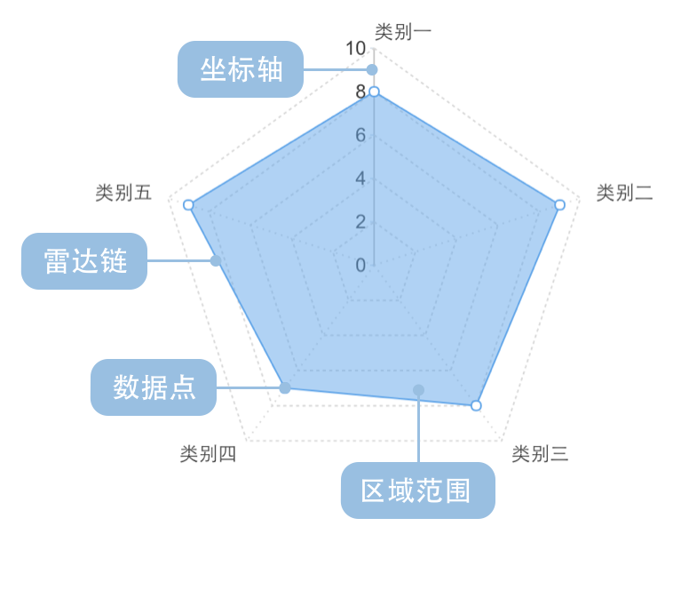

雷达图
雷达图的简介

雷达又叫戴布拉图、蜘蛛网图。传统的雷达图被认为是一种表现多维（4维以上）数据的图表。它将多个维度的数据量映射到坐标轴上，这些坐标轴起始于同一个圆心点，通常结束于圆周边缘，将同一组的点使用线连接起来就称为了雷达图。它可以将多维数据进行展示，但是点的相对位置和坐标轴之间的夹角是没有任何信息量的。在坐标轴设置恰当的情况下雷达图所围面积能表现出一些信息量。
每一个维度的数据都分别对应一个坐标轴，这些坐标轴具有相同的圆心，以相同的间距沿着径向排列，并且各个坐标轴的刻度相同。连接各个坐标轴的网格线通常只作为辅助元素。将各个坐标轴上的数据点用线连接起来就形成了一个多边形。坐标轴、点、线、多边形共同组成了雷达图。
着重要强调的是，虽然雷达图每个轴线都表示不同维度，但使用上为了容易理解和统一比较。使用雷达图经常会人为的将将多个坐标轴都统一成一个度量，比如：统一成分数、百分比等。这样这个图就退化成一个二维图了，事实上这种雷达图在日常生活更常见、更长用。 另外，雷达图还可以展示出数据集中各个变量的权重高低情况，非常适用于展示性能数据。
雷达图的主要缺点是：
(1) 如果雷达图上多边形过多会使可读性下降，使整体图形过于混乱。特别是有颜色填充的多边形的情况，上层会遮挡覆盖下层多边形。
(2) 如果变量过多，也会造成可读性下降，因为一个变量对应一个坐标轴，这样会使坐标轴过于密集，使图表给人感觉很复杂。所以最佳实践就是尽可能控制变量的数量使雷达图保持简单清晰。
英文名：Radar chart, Spider Chart, Web Chart, Polar Chart, Star Plots
注意：
(1) 为了使概念尽可能简单，且贴近现今的使用习惯，下面我们暂时只介绍退化为二维的雷达图。
(2) 雷达图更注重于同类图表之间的对比（即雷达图与雷达图之间的对比）
雷达图的构成

| 图表类型 |
单组雷达图 |
| 适合的数据 |
一个分类字段，一个连续字段 |
| 功能 |
对比分类数据的数值大小
|
| 数据与图形的映射 |
分类字段映射到极坐标下角度标定的位置连续字段映射到半径长度。
|
| 适合的数据条数 |
不超过30条 |

| 图表类型 |
单组雷达图 |
| 适合的数据 |
两个分类字段，一个连续字段 |
| 功能 |
对比分类数据的数值大小
|
| 数据与图形的映射 |
一个分类字段映射到极坐标下角度标定的位置另一个分类字段映射到颜色连续字段映射到半径长度。
|
| 适合的数据条数 |
不超过30*N条(N <= 8; N是雷达链分类数) |
## 雷达图的应用场景
### 表示覆盖力，多用于表示人员能力。
如下图所示，通过雷达图表达了测试团队中，员工 A 个人能力和团队能力的关系。个人与团队能力息息相关，自己在团队中扮演着什么角色？跟团队的差距在哪儿？作为测试经理，在把控团队上哪方面的能力是欠缺的？从下图即可一目了然。
|对比对象 |行业知识|产品知识|测试能力|基础理论|项目管理|企业文化|
|------|----
|基准分| 10 | 10 | 10 | 10 | 10 | 10 |
|员工 A| 7 | 8 | 8 | 5 | 6 | 8 |
|团队平均| 6| 8 | 7 |7 | 6 | 8 |
var data = [
{item: "行业知识", value: 10, obj: "基准分"},
{item: "产品知识", value: 10, obj: "基准分"},
{item: "测试能力", value: 10, obj: "基准分"},
{item: "基础理论", value: 10, obj: "基准分"},
{item: "项目管理", value: 10, obj: "基准分"},
{item: "企业文化", value: 10, obj: "基准分"},
{item: "行业知识", value: 7, obj: "员工A"},
{item: "产品知识", value: 8, obj: "员工A"},
{item: "测试能力", value: 8, obj: "员工A"},
{item: "基础理论", value: 5, obj: "员工A"},
{item: "项目管理", value: 6, obj: "员工A"},
{item: "企业文化", value: 8, obj: "员工A"},
{item: "行业知识", value: 6, obj: "团队平均"},
{item: "产品知识", value: 8, obj: "团队平均"},
{item: "测试能力", value: 7, obj: "团队平均"},
{item: "基础理论", value: 7, obj: "团队平均"},
{item: "项目管理", value: 6, obj: "团队平均"},
{item: "企业文化", value: 8, obj: "团队平均"}
];
var chart = new G2.Chart({
id: 'c2',
width: 400,
height: 400
});
chart.source(data);
chart.legend('obj',{ // 配置具体字段对应的图例属性
title: null
});
chart.coord('polar');
chart.axis('value',{ // 设置坐标系栅格样式
grid: {
type: 'polygon' //圆形栅格，可以改成
}
});
chart.col('value', {
min: 0,
max: 10,
tickCount: 10
});
chart.legend('right', {
title: null
});
chart.axis('item',{ // 设置坐标系栅格样式
line: null
});
// chart.area().position('item*value').color('obj');
chart.line().position('item*value').color('obj').size(2.5);
chart.point().position('item*value').color('obj').shape('circle');
chart.render();
多维对比－单雷达链
世界经济论坛不久前还发布了全球竞争力指数报告，通过基本要求、效率增强器、创新与成熟因素等三个大方面对全球国家和地区进行竞争力评估。中国排名第28，得分4.89。通过雷达图，我们可以清晰看出中国在各个因素下的得分情况，进而进行分析。
var data = [
{item: "创新", value: 3.9, level: 3},
{item: "商业成熟度", value: 4.4, level: 3},
{item: "创新与成熟因素", value: 4.1, level: 3},
{item: "市场大小", value: 6.9, level: 2},
{item: "技术准备", value: 3.5, level: 2},
{item: "金融市场发展", value: 4.3, level: 2},
{item: "劳动市场效率", value: 4.6, level: 2},
{item: "商品市场效率", value: 4.4, level: 2},
{item: "高等教育和训练", value: 4.4, level: 2},
{item: "效率增强器", value: 4.7, level: 2},
{item: "健康和基础教育", value: 6.1, level: 1},
{item: "宏观经济环境", value: 6.4, level: 1},
{item: "设施", value:4.7, level: 1},
{item: "机构", value: 4.2, level: 1},
{item: "基本要求", value: 5.3, level: 1}
];
var chart = new G2.Chart({
id: 'c3',
width: 600,
height: 600
});
chart.source(data);
chart.legend('obj',{ // 配置具体字段对应的图例属性
title: null
});
chart.coord('polar');
chart.axis('value',{ // 设置坐标系栅格样式
grid: {
type: 'polygon' //圆形栅格，可以改成
}
});
chart.col('value', {
min: 0,
max: 10,
tickCount: 10
});
chart.legendVisible('level', false);
chart.axis('item',{ // 设置坐标系栅格样式
line: null
});
chart.line().position('item*value').color('#F15A24').label('value');
chart.point().position('item*value').color('level',['#FCDC21', '#FF931E', '#ED1C24']).shape('circle');
chart.render();
多组多维对比－多雷达链
常常表示由多个维度组成的能力衡量。
如下图展示了华为 Mate 和 中兴 Grand Memo 两款手机的综合表现雷达图，分别从易用性、功能、拍照、跑分、续航这五个维度进行考核，可以看出两款手机在这个维度方面的性能都比较平衡，同时也可逐项对比。
var data = [
{item: "易用性", value: 80, obj: "华为Mate"},
{item: "功能", value: 90, obj: "华为Mate"},
{item: "拍照", value: 80, obj: "华为Mate"},
{item: "跑分", value: 70, obj: "华为Mate"},
{item: "续航", value: 90, obj: "华为Mate"},
{item: "易用性", value: 70, obj: "中兴Grand Memo"},
{item: "功能", value: 82, obj: "中兴Grand Memo"},
{item: "拍照", value: 81, obj: "中兴Grand Memo"},
{item: "跑分", value: 82, obj: "中兴Grand Memo"},
{item: "续航", value: 78, obj: "中兴Grand Memo"}
];
var chart = new G2.Chart({
id: 'c4',
width: 600,
height: 350,
plotCfg: {
margin: [20, 140, 60, 0]
}
});
chart.source(data);
chart.legend('obj',{ // 配置具体字段对应的图例属性
title: null
});
chart.coord('polar');
chart.axis('value',{ // 设置坐标系栅格样式
grid: {
type: 'polygon' //圆形栅格，可以改成
}
});
chart.col('value', {
min: 0,
max: 100,
tickCount: 5
});
chart.legend('right', {
title: null
});
chart.axis('item',{ // 设置坐标系栅格样式
line: null
});
chart.line().position('item*value').color('obj');
chart.point().position('item*value').color('obj');
chart.render();
// 画构成的代码
var data = [
{item: "类别一", value: 8, obj: "分组一"},
{item: "类别二", value: 9, obj: "分组一"},
{item: "类别三", value: 8, obj: "分组一"},
{item: "类别四", value: 7, obj: "分组一"},
{item: "类别五", value: 9, obj: "分组一"}
];
var chart = new G2.Chart({
id: 'c4',
width: 600,
height: 350,
plotCfg: {
margin: [20, 140, 60, 0]
}
});
chart.source(data);
chart.legend('obj',{ // 配置具体字段对应的图例属性
title: null
});
chart.coord('polar');
chart.axis('value',{ // 设置坐标系栅格样式
grid: {
type: 'polygon' //圆形栅格，可以改成
}
});
chart.col('value', {
min: 0,
max: 10,
tickCount: 5
});
chart.legend('right', {
title: null
});
chart.axis('item',{ // 设置坐标系栅格样式
line: null
});
chart.line().position('item*value').color('obj');
chart.area().position('item*value').color('obj').opacity(0.5);
chart.point().position('item*value').color('obj');
chart.render();
标签
实现
G2